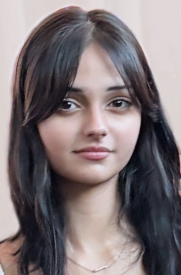

College Student
Actively learning, listening, and laboring
Email: hturke@iu.edu
I am a 20-year-old college junior studying English with a focus in technical and professional writing. I have been educating myself on literature, design, and marketing for the past 5 years. By also working as a part-time barista, I learned to communicate with people face-to-face and though writing. That is why I am aiming to forward my career in writing and communications, whether it is through more textbook readings or hands-on experience.
Major: English, Concentration in Technical and Professional Writing
Year: 2025 - present